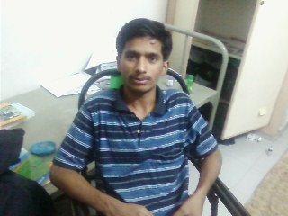

The Yearbook - Commemorating 2005-09!
Pavan Kumar's profile information
Name - Pavan KumarBirthday - Apr 25
Email - npreddy@students.iiit.ac.in
Address - Veerapunayuni Palli,Kadapa,A.P,516321
Phone - 9885584506
Webpage - Link
Hobbies - Books,TT,chitchat,Music,Seasons,Movies
Testimonials written by Pavan Kumar
Pavan Kumar's Album

{kind=link}
In Room
Testimonials
Vamshi Velagapuri wrote-all the best for your future mama..
iltu,
nee vam

Chakrapani wrote-
Pavan....One of the pillars of my life @ IIIT.
A person never seen talking to anybody during the first years...
Came in touch during II year and became very very close.He is such a nice and helpful guy, whoever(in our grp) gets a problem,pavan is there to help...it may be money,assignments,proj's..whatever,always ready to lend a helping hand.A very talented and hardworking person.He is very practical and logical in his thinkings!!.
Manavaadu ekkadikellina em chesina class maintain chesthadu

Inka eppudu asnmts ichina ventane start chesthadu,kani nenu assalu touch kuda cheyyaledu antadu..but red handed ga dorikipothu untadu
..
Always keeps on doing somthing..inka asnmts ki,projects ki, presentations ki partner ga andariki pavan ee kavali,endukante veedu partner aithe inka manam emi cheyyanavasaram ledu.Assalu inka religion course appudu aithe inka nenu register ayyanu anthe manavadu naaku B grade thechi pettadu
 .
.
Inka one of the best entertaining things entante veedu mohan kottukuntuu untaru assalu 2 much...pakka H&W godavallaga untayi
...day motham kottukuntu untaru malli night ki okataipotharu 
according to a small story,
" There was a person travelling in a boat,and there was a big storm,he puts his faith in god and says God wil save me.During this time he sees all tortoises swimming back to land and gesturing him to turn back,then he sees a fisherman asking him to get back,then he hears wind blowing asking him turn back,but he doesnt go back stating God will save me.Unfortunately,the boat sinks and he expires and faces God, he asks God 'Why did you not save me??' God says, I came as tortoise,fisherman,and wind asked you to get back, and you did not.What more could have I done??"
For me God has come in the form of friends(pavan,satish,nihar,mohan,etc,...) and I think I identified them right...
will be missing u a lot ra..
All the Best for ur future!!!
with love
chakri..
Hari krishna wrote-
--------cut chesteyy scene-4--------------------
aieee councilling center warangal ki velli,
ye coll ki naaku seat ichey luck undaaa ani wait chestundagaa
 malli "hai" chustey pavan gaadu, yentraa ani alochinchey lopala "bye "kuda
malli "hai" chustey pavan gaadu, yentraa ani alochinchey lopala "bye "kuda 
-------------Cut cheteyy scene-5---------------
2nd day ,ye coll vachindi ? ani chusteyy "IIIT" (sry H ani appudu ledu ley)
, chudakudanukuntey chusaaa,okkasari expect
chesaaa" ani anukunna"pavan also IIIT"
 appudeppudoo harischandrudini nakshtrakudu follow ayyadani chebithey nammaledu,
appudeppudoo harischandrudini nakshtrakudu follow ayyadani chebithey nammaledu,
kaanii ii hari ni ii pavan gaadu follow avuthuney unnadu
-----------Cut chestey scene -6------------
Pavan gaadu programming chestunnappudu chusteyy, oka monkey
 ki programming skills vastey yela unatyanna vishyam ittey
ki programming skills vastey yela unatyanna vishyam ittey
imagine chesukogalaru ,koncham sepu chair meeda (chair lo kaadu), bed rods meeda, table meeda, thikka regithey bed ki
tahlakindulugaaa veladuthu chestadu
 first year andaru nannu vachi pavan nee tho thappa yevaritho mataldadaa?? Ani adigey
first year andaru nannu vachi pavan nee tho thappa yevaritho mataldadaa?? Ani adigey
vallu, ippudu naatho thappa andaritho matladuthunnadu vaadu (just joking)
,inka ADP veenni yela bharinchaloo, yento? 
Veedi cabin lo oka rod and strong chair araange cheyyali lekunteyy pavan work cheyyaledu , company debbai poddi
inka cuts levuu , chebuthuntey vintuney untaru, ammaa mothaniki pavan lanti manchi vaadu
 Kasi gaadu, silent assassin
Kasi gaadu, silent assassin
inkokadu kanipinchadu ani cheppadaanikey idanthaa---
Hari krishna wrote-
Pavan From Pulivendula(land of tigers)
 , kaani veedu matram puli kaadu ,assalu veedi gurinchi cheppalanteyy, nenu veedu yela meet ayyam anna vishayanni cheppalsindey kaani a katha rastey ramayanam , thistey jodha akbar antha untundi.parvaledu try chesta
, kaani veedu matram puli kaadu ,assalu veedi gurinchi cheppalanteyy, nenu veedu yela meet ayyam anna vishayanni cheppalsindey kaani a katha rastey ramayanam , thistey jodha akbar antha untundi.parvaledu try chesta
-----------------scene-1-------------------------
yevado yedava, IIt ravalantey ramayya ravalani , ramayya ravalantey coaching thisukovalani chebithey yerra bus yekki hyderabad ki vachanu.hostel lo digaanu
 , asalu freedom yela untundo chusaa, ni8 ayithey movie , pagalayithey coaching room lo last bench lo nidra,ila life saagipothundagaa, oka (silence)thunder maa room loki vachindi ,yevadra veedu pedda theda candidate laaga unnadu ani anukunnam,ni8 andaru movies ki velthunteyy, veedu maatram pen yegirestu , pattukuntu, yegirestu, pattukuntu,alaa bed meeda books chaduvuthundu , mallli ye 1 ko vachi chustey aaa pose lo ney alaa fix ayi kanipichevaadu, class lo andarini chedagottesaadu, veedu vachina taruvatha andaru movies ki ravadam maanesi, class lo kothagaaaa sir questions adigithey answers ivvdam modalu pettaru(kaliyugam vachesindi anukunnau) back ground yentaa ani telsuvalunukunnau , appudey 10 th results, 550 abbo pavan gaadu anukunna
, asalu freedom yela untundo chusaa, ni8 ayithey movie , pagalayithey coaching room lo last bench lo nidra,ila life saagipothundagaa, oka (silence)thunder maa room loki vachindi ,yevadra veedu pedda theda candidate laaga unnadu ani anukunnam,ni8 andaru movies ki velthunteyy, veedu maatram pen yegirestu , pattukuntu, yegirestu, pattukuntu,alaa bed meeda books chaduvuthundu , mallli ye 1 ko vachi chustey aaa pose lo ney alaa fix ayi kanipichevaadu, class lo andarini chedagottesaadu, veedu vachina taruvatha andaru movies ki ravadam maanesi, class lo kothagaaaa sir questions adigithey answers ivvdam modalu pettaru(kaliyugam vachesindi anukunnau) back ground yentaa ani telsuvalunukunnau , appudey 10 th results, 550 abbo pavan gaadu anukunna
-----cut chesteyy scene -2-----------------
ramayya raledani thega sambari padipoyi narayana locheranu
, naa antha trunk case ni room ki thisukelthundagaa oka tata sumo aagindi, tata sumo lo nundi oka samarasimha reddy diguthademo anukunna chustey pavan reddy gaaru digaaru , vaadikanna baruvugaa unna suit case ni lakkuntu, pikkuntu, vachi hai annadu...
----------cut chesteyy scen-3------------
"yevado pavan antaaa, asalu iisarii top lo expect chestunanrantaa, oka range lo marks vastunnayi iit, aieee lo
" ani talk .chusteyy iideyy,andaru nidrapothey veedu melukuntaadu , andaru melukunna veedu melukuney untadu , neenu ila chadivithey collector kavachu anukuntu padukuney vaannin
Nagarjuna Pavan Kumar G wrote-
pavan - tagline Emi raaste baavuntundi??
a silent revolution....

mottaaniki veedu unique candidate...adaite cheppagalanu...nenu andarito close ga undakapoyinaa oka touch lo untaanu..alaa nenu choosina vaallalo veedu konchem tedaa anukunevaadini modatlo...kaanii OBH ki vacchaaka Satish valana veedu close ayyaadu....veedu telivainavaadu...actual gaa avatali vaadi telivitetalani nenu antagaa pogadataaniki ishtapadanu...kaani veedu telivainavaadu...chaalaa opika unnavaadu...
ADP ki dorikina varamanukondi...ADP vaadu chese comedy ni baagaa discuss chestunnaam ee madhya...veedi hand writing chaalaa baavuntundi(telugu lo)...veedu "ordinary man with that edge" anta...nenu maatram veedu "intelligent man with no edge" antaaanu...
anyways hez got a great future...hope he too sees it and capture it rather than just being in oblivion...All the best Pavan
Yours simply
Nagarjuna
Satish Varagani wrote-
'Pavan' ee name thone nakentho anubhandam vundi anukunta endukante inter
lo kuda pavan ane peruto manchi sanihityam vundi...
veedu entha manchodante evadina just 6 mnths parichayam vunna o frnd
ni one year enno risks teesukuni ,IIIT gaurds kallu kappi, nana tantalu padi tana room lo place istada andi
. nenithe f**koff antanu
naku 3-2 lo veedu baga close ayyadu ..appati nunchi veedi meeda enthala depend ayyanante okanoka time lo veedu pakkana lepothe emi
cheyalenemo anipinchindi (edo bagundi kada ni rayaledu. its really
true)
veediki patience chala ekkuva ,has good observation skills..nenu,veedu kalisi vodafone vadiki pedda bokka pettam ..ma kosame vadu ee madya antihackers commision vesadani naku kodigga doubt
pavan u rock ..all the best for ur future